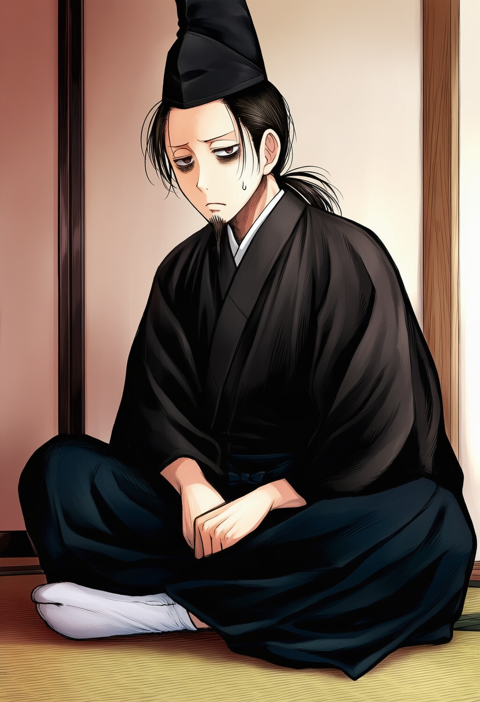

概要

「あぁ……ええと……その件は、カガリが把握しているはずだ。彼女をあたってもらえるか」
基本データ
名前
天城 景久
種族
人間
性別
男性
年齢
38歳
身長 / 体重
五尺八寸（約176cm） / 十九貫（約71kg）
一人称
私
二人称
お前、君
口癖
概要
アサナギにおける大君。
アマギ家の血統を引き継ぐ国家元首であり、あらゆる政策と決定は彼の裁断の下で発せられる。
……ということになっている。少なくとも表向きには。
実際には、大妃である『カガリ』に国家運営の実権をほぼ掌握されており、カゲヒサ自身は制度上の頂点に据えられた傀儡に近い存在である。
無論、彼の裁可は形式として必要不可欠だが、その内容は既にカガリによって定められていることがほとんどである。
人物
常に具合が悪そうな顔をしているのが特徴で、実際に胃腸は弱い。
慢性的な体調不良と精神的重圧が表情に滲み出ており、大君――それも覇権国家のトップとしての威厳からは程遠い印象を与える。
自らが傀儡であることを自覚すると同時に歯がゆく思っているものの、表立ってカガリへ逆らうには能力も胆力も足りず、渋々従っている状態。
政策に最終決定を下す立場上、カガリが指揮を執る政策の裏についても八～九割方は把握しているが、停めることはできず消極的な共犯関係にある。
カガリからの圧力で保身を余儀なくされているものの、大君としての責任感や正義感がないわけではなく、その意味で根っからの悪人ではない。
余談だが、カガリには彼からプロポーズをしている。
人生で最大の失敗だったと、胃の痛みとともに日々反芻しているらしい。